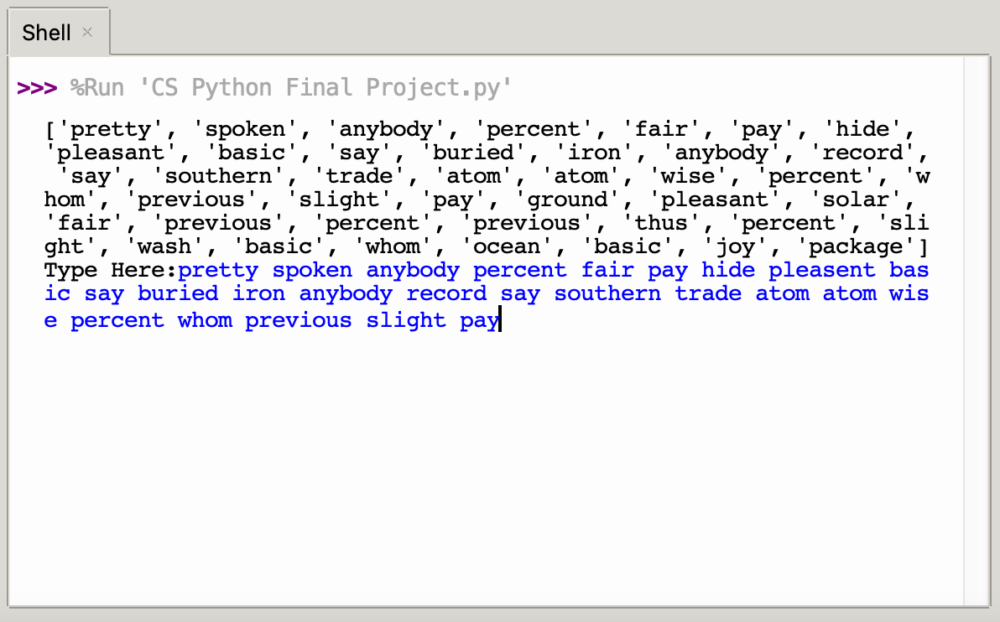

This website is a description of the speed typing test that I have created. A typing speed test measures the amount of words you can type within a given time frame. The user will be presented with a list of generic everyday words, and will try and type as many words as possible.As soon as the first letter is typed, a timer begins. When the timer reaches zero, the user will not be able to type anymore. If a word is typed incorrectly, it will not be counted towards the score. The final score that the user receives only includes the amount of words that were typed correctly with proper capitalization and punctuation if needed.


This project works by using data from a csv file that contains many generic everyday words. The code will read the file and randomly order each word in the file. All of these words are then stored into a large list. Next, the code will ask for the user's input and start a stopwatch counting the starting time and the ending time. The amount of time passed is then calculated by subtracting the ending time from the starting time. When the user finishes typing, a new list containing all of the words that the user typed will be created. Following this, the code will compare the original list of the randomly generated words to the new list of user input words. For every word that is matching between the two lists, one point will be added to the score. This is the amount of words that were typed correctly. Next, the amount of words that were typed correctly, multiplied by sixty, will be divided by the amount of time passed. This will calculate the user's words per minute score (WPM). The user will be presented with the option to play again. Each score will be counter and stored in a list. When the user does not want to try another test again, a graph showcasing their scores and number of tests will appear.